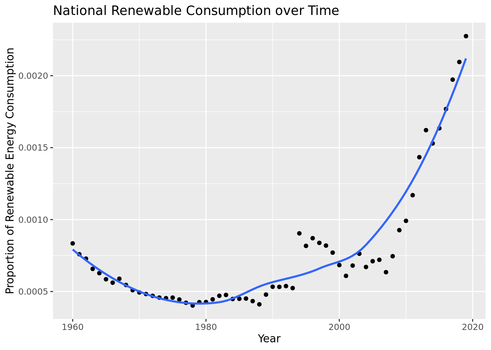
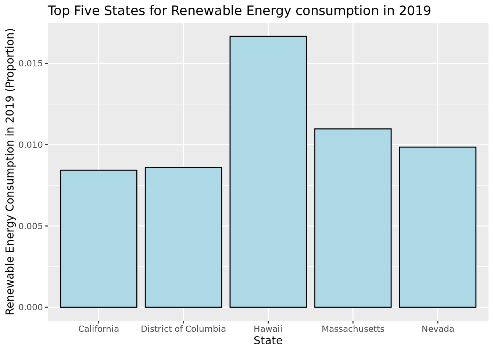
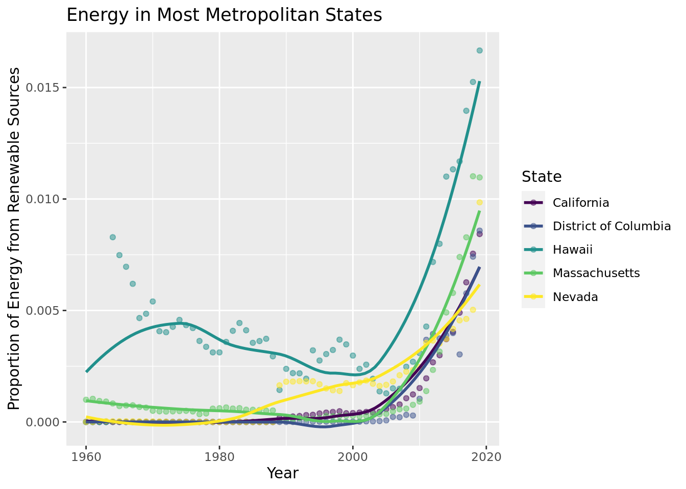
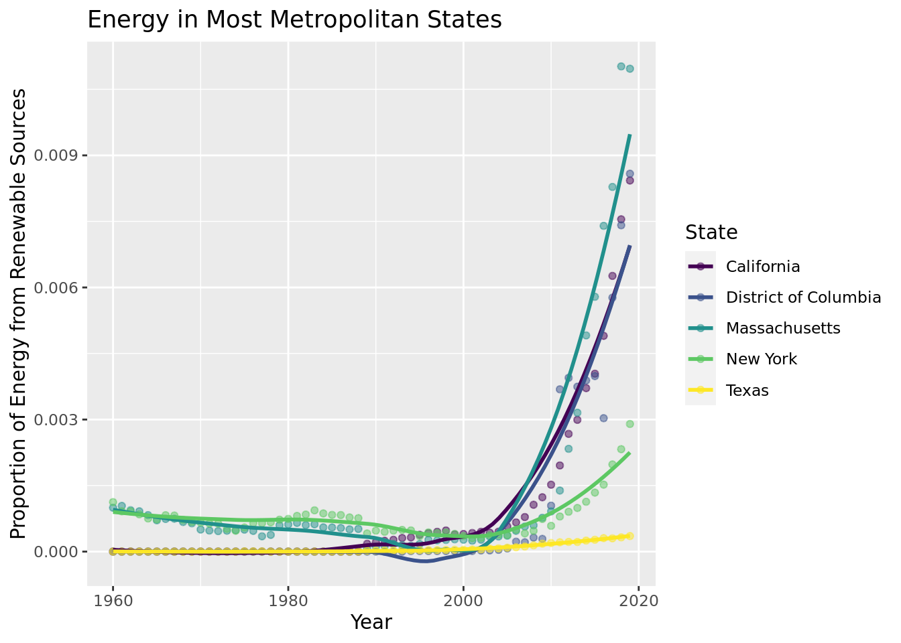
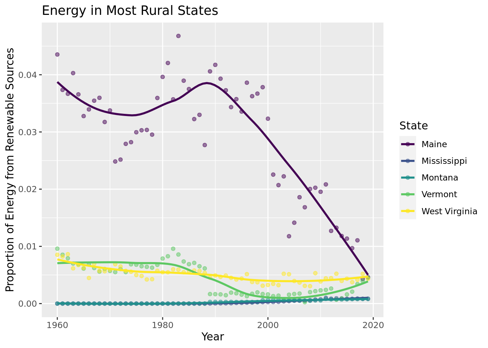
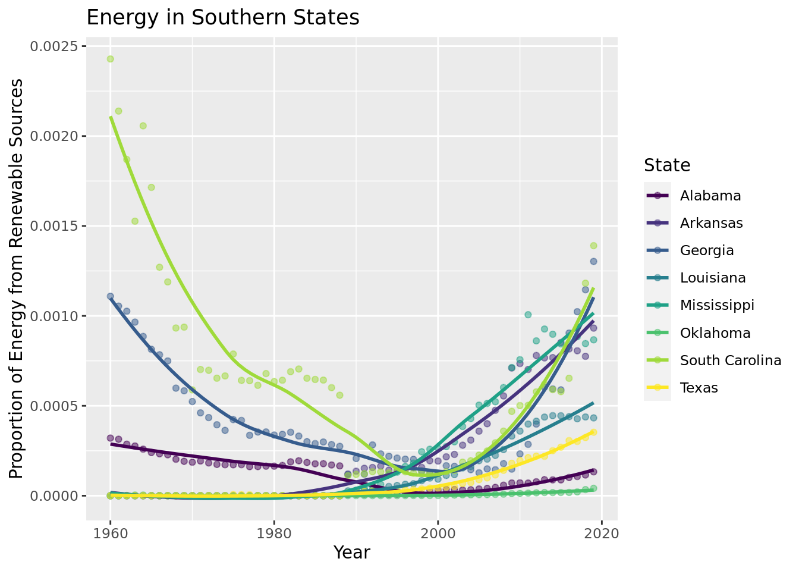
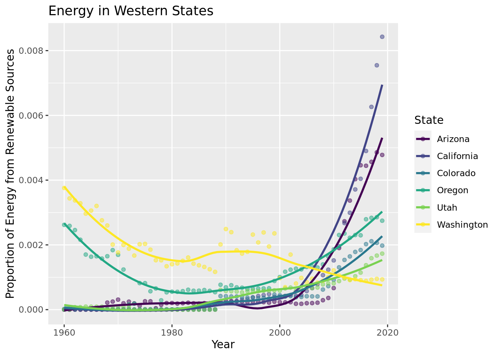
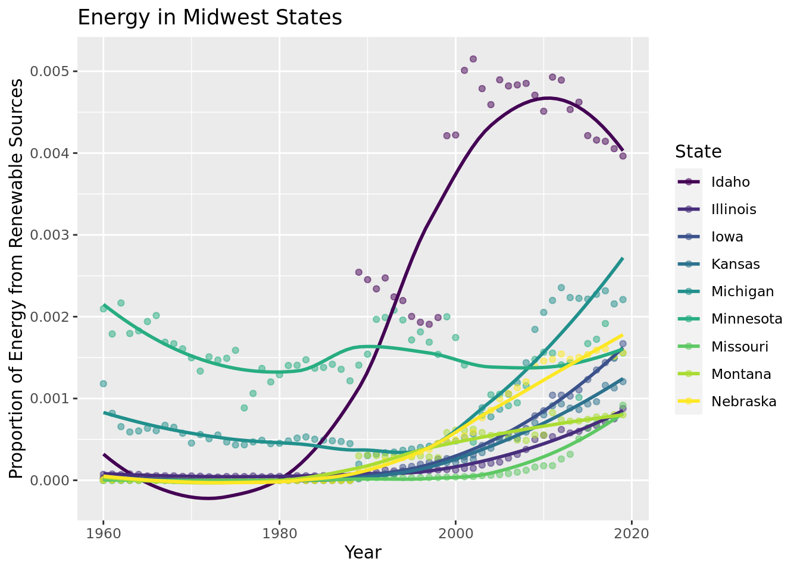

This data set comes from the CORGIS Dataset Project, who got this data from the US Energy Information Administration, a part of the US Government. This data has been collected by the US Energy Information Administration from 1960 to 2019 based on the consumption, production, expenditures, and price of different sources of energy by state.
The observations are of different states in different years and have variables for many energy sources, including coal, kerosene, geothermal, hydro, etc. There are also different variables for the production, consumption, expenditure, and price of these types of energy. For some of these, information was not available, in which case a 0 was reported.
There should be no ethical concerns about the data since the data is not specific to individuals and reports many types of used energy in the US.
Research question: On both a state and national level, how has the proportion of renewable energy usage/production relative to overall energy usage/production changed over time, and has there been a shift in which states are the most renewable energy heavy?
As climate change continues to progress rapidly, it is important to move towards clean technology and renewable energy sources in order to save our earth while ensuring innovation. The United States of America has emerged as a leading renewable energy innovator in the world, which is a perfect study target for researchers who are interested in the implementation of renewable energy. Our team thinks that analyzing the energy usage of different states is a good way to see how our country is progressing toward the goal of slowing global warming on a local level. This research method will help policymakers and environmental engineers pinpoint the specific problems regarding renewable energy in our country and help us move towards a clean future of collaboration of all states.
States that have higher emphasis on technological advancement such as California and North Carolina will see a significant increase in renewable energy production and consumption.
Important definitions: The data set contains both categorical and quantitative variables. The categorical variables include “State”. The remaining columns, focusing on relevant facts regarding different uses of energy, are all quantitative.
Renewable energy: For our project, energy is considered renewable if it meets two criteria. First, the energy must be derived from a naturally occurring source. Additionally, the energy is naturally replenished at a higher rate than it is consumed/used.
Other energy sources: natural gas, coal, as well as any other sources of energy.
Groups of interest: states, expenditures and consumption of renewable energy and other energy sources, etc. Our goal is to study the effects of these aforementioned variables to learn about consumption habits and technological specialization of different states.
Literature Review
Ratner, M., Bracmort, K., Brown, P., Campbell, R. J., Holt, M., Humphries, M., Pirog, R., & Yacobucci, B. D. (2018, November 5). U.S. Energy in the 21st Century: A Primer. The Congressional Research Service. Retrieved March 10, 2023, from https://crsreports.congress.gov/product/pdf/R/R46723
Summary: This article dives into energy usage in the United States and goes into detail about recent trends of energy usage. The text claims that, despite energy usage remaining relatively constant, the U.S. has shifted away from non-renewable energy sources (oil and coal) and towards more renewable sources of energy. The article makes the claim that natural gas and renewable energy consumption has increased, oil and nuclear power consumption didn’t change and coal decreased. In the 21st century, renewable energy consumption has almost doubled, making its increasing importance obvious. Despite this, renewable energy still only makes up 11% of U.S. energy consumption.
Difference from Research Question: One big difference is that the article talks about general trends in the U.S. and does discuss any of the costs. Also, the article does not take into account the factors that could provide reasoning for differences in renewable energy usage by state, which we plan to look into.
data <-read_csv("~/project-banana-boat/data/energy.csv")
Rows: 3060 Columns: 84
── Column specification ────────────────────────────────────────────────────────
Delimiter: ","
chr (1): State
dbl (83): Year, Production.Coal, Consumption.Commercial.Coal, Consumption.Co...
ℹ Use `spec()` to retrieve the full column specification for this data.
ℹ Specify the column types or set `show_col_types = FALSE` to quiet this message.
Creating variables total energy, total renewable energy, and proportion of renewable energy consumption:
national_renewable_usage |>ggplot(aes(x = Year, y = prop_renewable_all_states)) +geom_point() +geom_smooth(se =FALSE) +labs(title ="National Renewable Consumption over Time",y ="Proportion of Renewable Energy Consumption")
`geom_smooth()` using method = 'loess' and formula = 'y ~ x'

Here, we use a dot plot to demonstrate the change over time of renewable consumption. Additionally, we added a line of best fit in order to best see how the consumption changed over time. It is important to note here that it would not make sense to fit a model here because the graph is not linear.
Energy proportion for top 5 states in 2019:
data |>filter(Year ==2019) |>arrange(desc(prop_renewable)) |>slice(1:5) |>ggplot(aes(x = State, y = prop_renewable)) +geom_col(color ="black", fill ="lightblue") +labs(title ="Top Five States for Renewable Energy consumption in 2019",y ="Renewable Energy Consumption in 2019 (Proportion)")

Here, we use a bar graph in order to compare each states renewable energy consumption in 2019.
Track these states over time:
data |>filter(State =="California"| State =="District of Columbia"| State =="Hawaii"| State =="Massachusetts"| State =="Nevada") |>group_by(State) |>ggplot(aes(x = Year, y = prop_renewable, color = State)) +geom_point(alpha =0.5) +scale_color_viridis_d() +geom_smooth(se =FALSE) +scale_color_viridis_d() +labs(y ="Proportion of Energy from Renewable Sources", x ="Year", title ="Energy in Top 5 Renewable Energy States")
Scale for colour is already present.
Adding another scale for colour, which will replace the existing scale.
`geom_smooth()` using method = 'loess' and formula = 'y ~ x'

This dot plot with lines of best fit allows us to better visualize how these states consumption of renewable energy has increased over time.
Metropolitan vs rural:
metropolitan <- data |>filter(State =="California"| State =="District of Columbia"| State =="New York"| State =="Massachusetts"| State =="Texas") |>group_by(State)rural <- data |>filter(State =="Maine"| State =="Vermont"| State =="Mississippi"| State =="Montana"| State =="West Virginia") |>group_by(State)
metropolitan |>ggplot(aes(x = Year, y = prop_renewable, color = State)) +geom_point(alpha =0.5) +scale_color_viridis_d() +geom_smooth(se =FALSE) +scale_color_viridis_d() +labs(y ="Proportion of Energy from Renewable Sources", x ="Year", title ="Energy in Most Metropolitan States")
Scale for colour is already present.
Adding another scale for colour, which will replace the existing scale.
`geom_smooth()` using method = 'loess' and formula = 'y ~ x'

rural |>group_by(State) |>ggplot(aes(x = Year, y = prop_renewable, color = State)) +geom_point(alpha =0.5) +scale_color_viridis_d() +geom_smooth(se =FALSE) +scale_color_viridis_d() +labs(y ="Proportion of Energy from Renewable Sources", x ="Year", title ="Energy in Most Rural States")
Scale for colour is already present.
Adding another scale for colour, which will replace the existing scale.
`geom_smooth()` using method = 'loess' and formula = 'y ~ x'

This dot plot with lines of best fit shows the 5 states with the lowest renewable energy consumption, and allows us to see how their consumption of renewable energy has changed over time.
Geographical location:
south <- data |>filter(State =="Alabama"| State =="Georgia"| State =="Mississippi"| State =="Texas"| State =="Louisiana"| State =="Oklahoma"| State =="Arkansas"| State =="South Carolina") |>group_by(State)northeast <- data |>filter(State =="Maine"| State =="Massachusetts"| State =="Vermont"| State =="New Hampshire"| State =="Connecticut"| State =="Pennsylvania"| State =="New York"| State =="New Jersey"| State =="Maryland"| State =="District of Columbia"| State =="Rhode Island"| State =="Delaware")|>group_by(State)west <- data |>filter(State =="California"| State =="Washington"| State =="Oregon"| State =="Colorado"| State =="Utah"| State =="Arizona"| State ==""| State =="Utah") |>group_by(State)midwest <- data |>filter(State =="Montana"| State =="Minnesota"| State =="Nebraska"| State =="Kansas"| State =="Iowa"| State =="Missouri"| State =="Idaho"| State =="Illinois"| State =="Michigan")|>group_by(State)south |>group_by(State) |>ggplot(aes(x = Year, y = prop_renewable, color = State)) +geom_point(alpha =0.5) +scale_color_viridis_d() +geom_smooth(se =FALSE) +scale_color_viridis_d() +labs(y ="Proportion of Energy from Renewable Sources", x ="Year", title ="Energy in Southern States")
Scale for colour is already present.
Adding another scale for colour, which will replace the existing scale.
`geom_smooth()` using method = 'loess' and formula = 'y ~ x'

northeast |>group_by(State) |>ggplot(aes(x = Year, y = prop_renewable, color = State)) +geom_point(alpha =0.5) +scale_color_viridis_d() +geom_smooth(se =FALSE) +scale_color_viridis_d() +labs(y ="Proportion of Energy from Renewable Sources", x ="Year", title ="Energy in NE States")
Scale for colour is already present.
Adding another scale for colour, which will replace the existing scale.
`geom_smooth()` using method = 'loess' and formula = 'y ~ x'
west |>group_by(State) |>ggplot(aes(x = Year, y = prop_renewable, color = State)) +geom_point(alpha =0.5) +scale_color_viridis_d() +geom_smooth(se =FALSE) +scale_color_viridis_d() +labs(y ="Proportion of Energy from Renewable Sources", x ="Year", title ="Energy in Western States")
Scale for colour is already present.
Adding another scale for colour, which will replace the existing scale.
`geom_smooth()` using method = 'loess' and formula = 'y ~ x'

midwest |>group_by(State) |>ggplot(aes(x = Year, y = prop_renewable, color = State)) +geom_point(alpha =0.5) +scale_color_viridis_d() +geom_smooth(se =FALSE) +scale_color_viridis_d() +labs(y ="Proportion of Energy from Renewable Sources", x ="Year", title ="Energy in Midwest States")
Scale for colour is already present.
Adding another scale for colour, which will replace the existing scale.
`geom_smooth()` using method = 'loess' and formula = 'y ~ x'

These graphs allow us to both compare the different regions in the US, and within each region see how the consumption of renewable energy by state has changed over time. With this, we can analyze trends and patterns by region.
Interaction Model:
Model proportion of renewable energy vs region and time to predict proportion of renewable energy in the future.
south_state <-c("Alabama", "Georgia", "Mississippi", "Texas", "Louisiana","Oklahoma", "Arkansas", "South Carolina")northeast_state <-c("Maine", "Massachusetts", "Vermont", "New Hampshire", "Connecticut", "Pennsylvania", "New York", "New Jersey","Maryland", "District of Columbia", "Rhode Island", "Delaware")west_state <-c("California", "Washington", "Oregon", "Colorado", "Utah","Arizona", "", "Utah")data <- data |>mutate(region =if_else(State %in% south_state,"south", if_else(State %in% northeast_state, "northeast", if_else(State %in% west_state,"west","midwest"))))
\(\hat{prop\_renewable} = -5.6e^{-2}+2.88e^{-5} * Year + 1.34e^{-1}*northeast + 5.18e^{-2} * south + 6.55e^{-3} * west + 6.6e^{-5}*Year*northeast -2.65e^{-5}*Year*south -3.4e^{-6}*Year*west\)
{1 if south; 0 if not} {1 if northeast; 0 if not} {1 if west; 0 if not}
Interpreting our model:
Holding region constant, we estimate the proportion of renewable energy a state uses to increase \(2.88e^{-05}\) every year.
Holding year constant, we estimate the proportion of renewable energy a state uses to increase \(0.1343326\) for the Northeast reason compared to the Midwest region of the United States.
Holding year constant, we estimate the proportion of renewable energy a state uses to increase \(0.05173856\) for the South reason compared to the Midwest region of the United States.
Holding year constant, we estimate the proportion of renewable energy a state uses to increase \(0.006554698\) for the West reason compared to the Midwest region of the United States.
Rsquared values:
glance(model)$r.squared
[1] 0.08918937
glance(model)$adj.r.squared
[1] 0.08710035
glance(model)$AIC
[1] -24588.86
Predicting renewable energy proportions in 2030:
predict(model, data.frame(Year =2030, region ="west"))
# A tibble: 1 × 1
.pred
<dbl>
1 0.00195
predict(model, data.frame(Year =2030, region ="south"))
# A tibble: 1 × 1
.pred
<dbl>
1 0.000329
predict(model, data.frame(Year =2030, region ="northeast"))
# A tibble: 1 × 1
.pred
<dbl>
1 0.00229
predict(model, data.frame(Year =2030, region ="midwest"))
# A tibble: 1 × 1
.pred
<dbl>
1 0.00230
Results Our data confirms several important pieces of information. Primarily, renewable energy consumption since 1960 has overall increased significantly. Similarly, California, Washington D.C., Hawaii, Massachusetts, and Nevada use the highest proportion of renewable energy, with Hawaii having the highest proportion of the 5. Just like the nation as a whole, these states have seen a significant increase in renewable energy usage, sharply increasing in the early 2000s. When comparing metropolitan to rural areas, overall metropolitan areas have a much higher proportion of renewable energies compared to rural areas. Furthermore, metropolitan areas over the last years have increased their proportion of renewable energies, while rural areas have stayed stagnant or decreased. In terms of geographical location, the northeastern states by far have the highest proportion of renewable energy. The southern states, on the other hand, have the worst proportion of renewable energy.